Reporte de Detalle de Consignación
Ubique y seleccione en el menú de ADempiere, la carpeta “Gestión de Compras”, luego seleccione el “Reporte de Detalle de Consignación”.
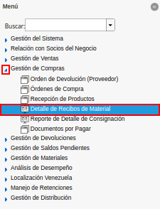
Imagen 1. Menú de ADempiere
Podrá visualizar la ventana del reporte de detalle de consignación con diferentes campos que le permiten al usuario, filtrar la información en base a lo requerido en su momento.
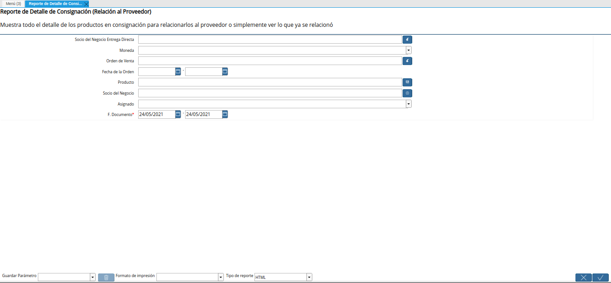
Imagen 2. Ventana del Reporte de Detalle de Consignación
Seleccione en el campo “Socio del Negocio Entrega Directa”, el socio del negocio proveedor del material a consignación.
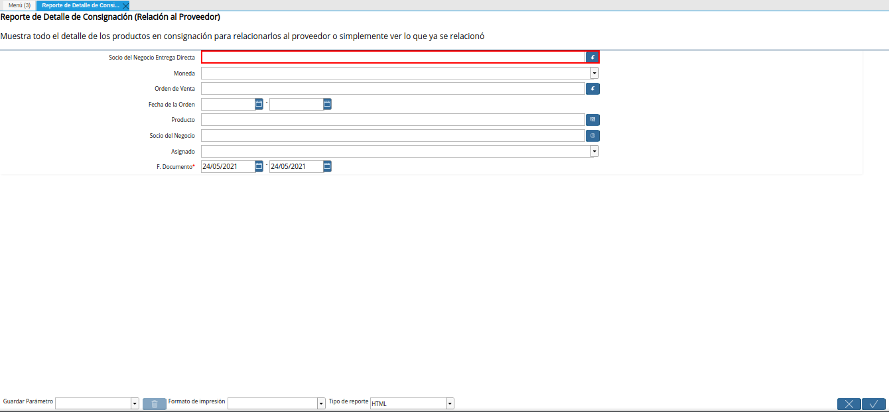
Imagen 3. Campo Socio del Negocio Entrega Directa
Seleccione en el campo “Moneda”, la moneda por la cual requiere filtrar la información.
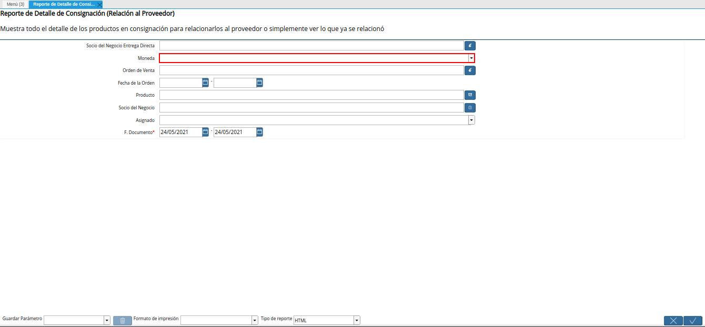
Imagen 4. Campo Moneda
Seleccione en el campo “Orden de Venta”, la orden de compra o venta por la cual requiere filtrar la información.
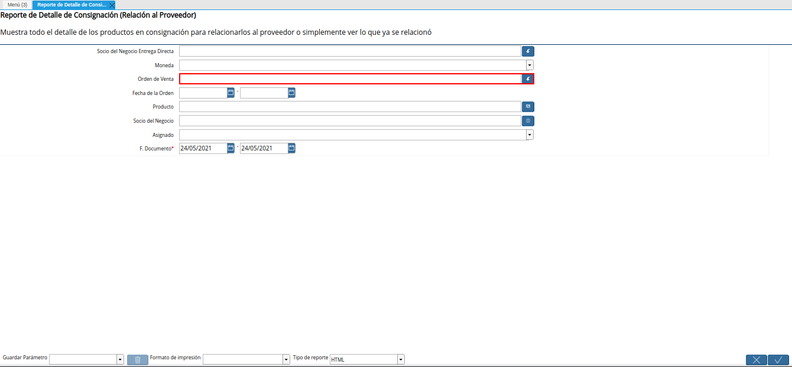
Imagen 5. Campo Orden de Venta
Introduzca en el campo “Fecha de la Orden”, el rango de fecha en el cual fue generada la orden de venta.
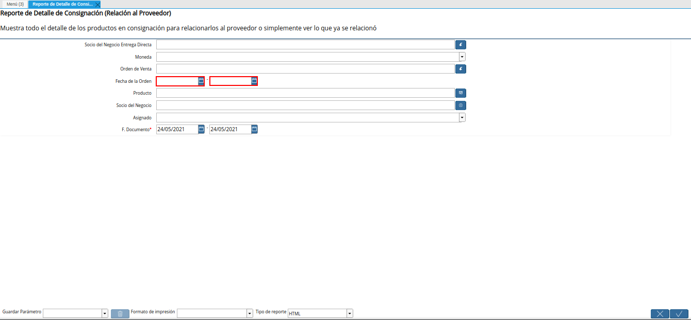
Imagen 6. Campo Fecha de la Orden
Seleccione en el campo “Producto”, el producto por el cual requiere filtrar la información.
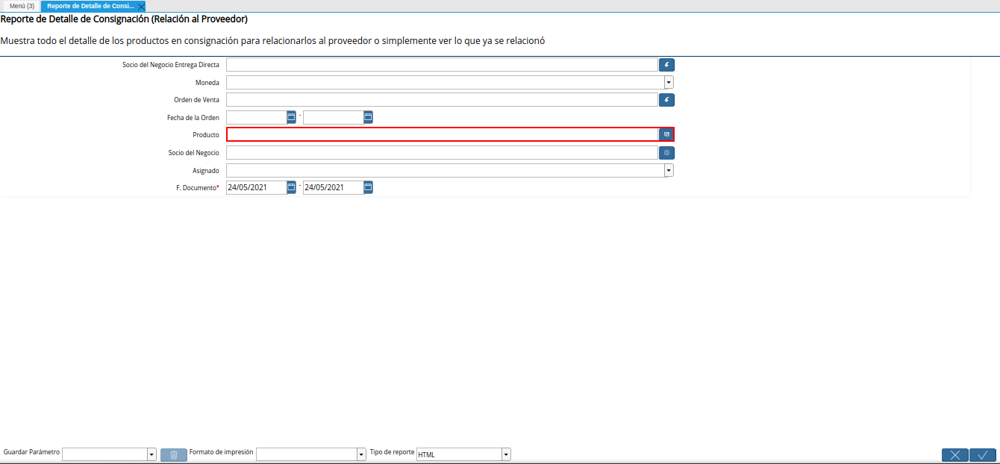
Imagen 7. Campo Producto
Seleccione en el campo “Socio del Negocio”, el socio del negocio por el cual requiere filtrar la información.
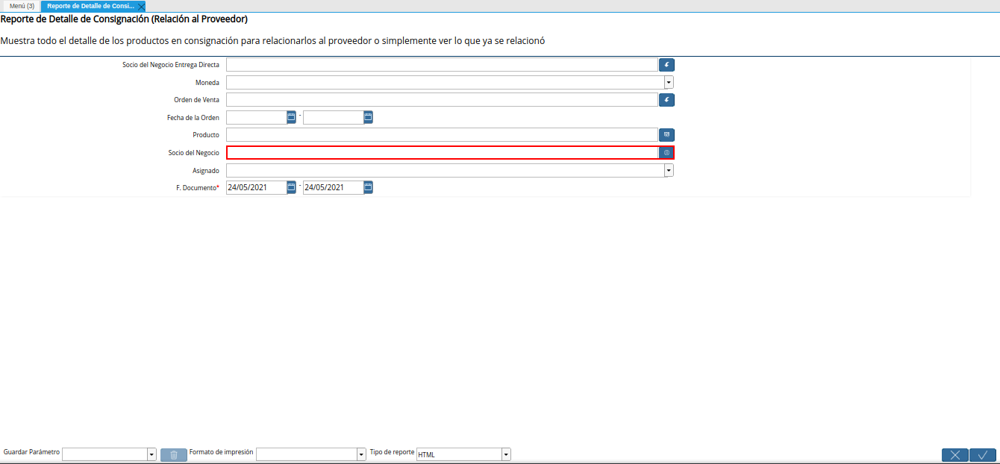
Imagen 8. Campo Socio del Negocio
Indique en el campo “Asignado”, si el pago ha sido asignado o no.
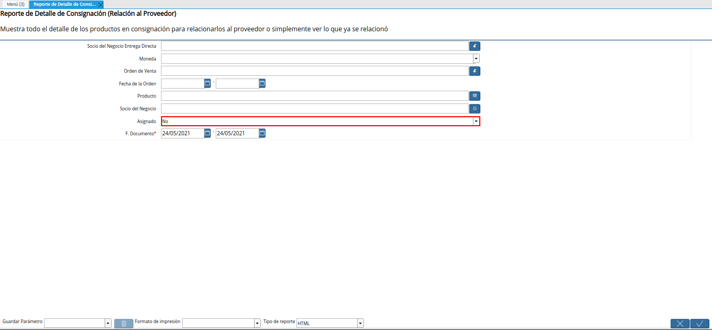
Imagen 9. Campo Asignado
Seleccione en el campo “F. Documento”, el rango de fecha en el que fue generado el documento.
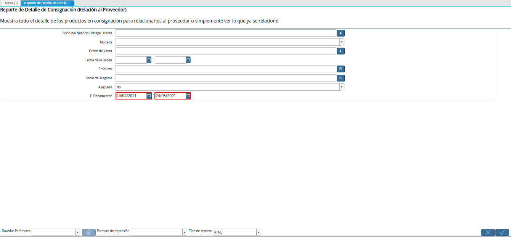
Imagen 10. Campo F. Documento
Seleccione la opción “OK”, para generar el reporte en base a la información seleccionada en los diferentes campos que contiene la ventana del reporte de detalle de consignación.
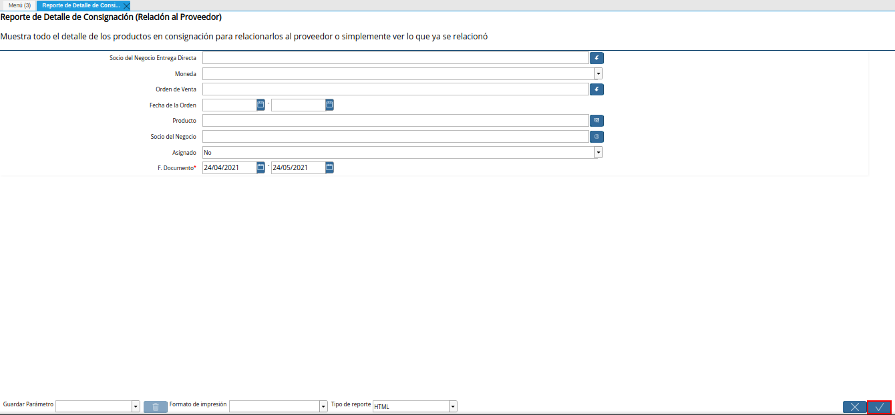
Imagen 11. Opción OK
Podrá visualizar de la siguiente manera, la información del reporte de detalle de consignación.
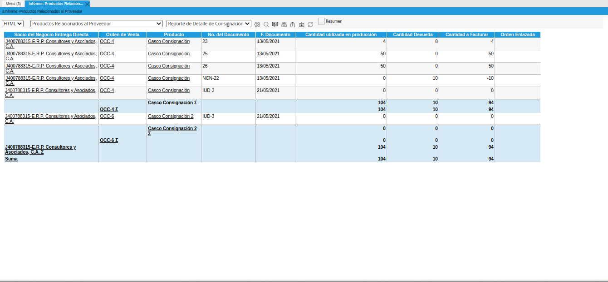
Imagen 12. Resultado del Reporte
El reporte se genera en formato “HTML”, para cambiar dicho formato se debe seleccionar la opción del formato en el campo “Tipo de Reporte”, el mismo se encuentra ubicado en la parte superior izquierda de la ventana.
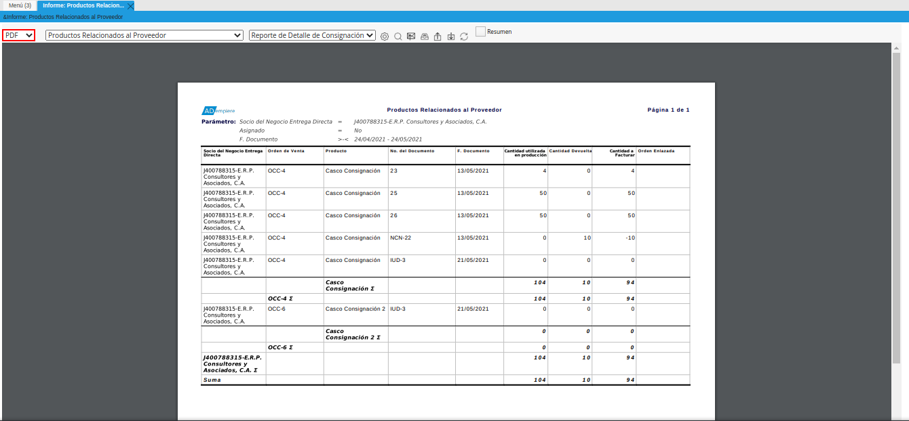
Imagen 13. Tipo de Reporte
Para visualizar un resumen del reporte donde se reflejen solamente los totales del mismo, se debe seleccionar el check “Resumen”, ubicado de ultimo lugar de izquierda a derecha en la parte superior de la ventana.
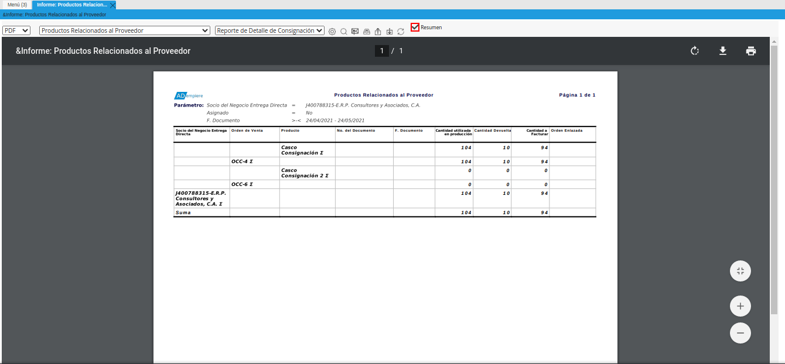
Imagen 14. Check Resumen